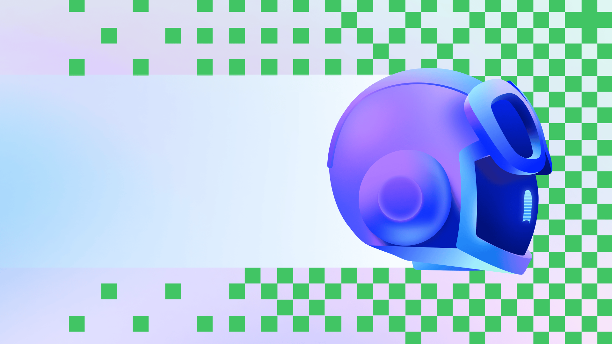
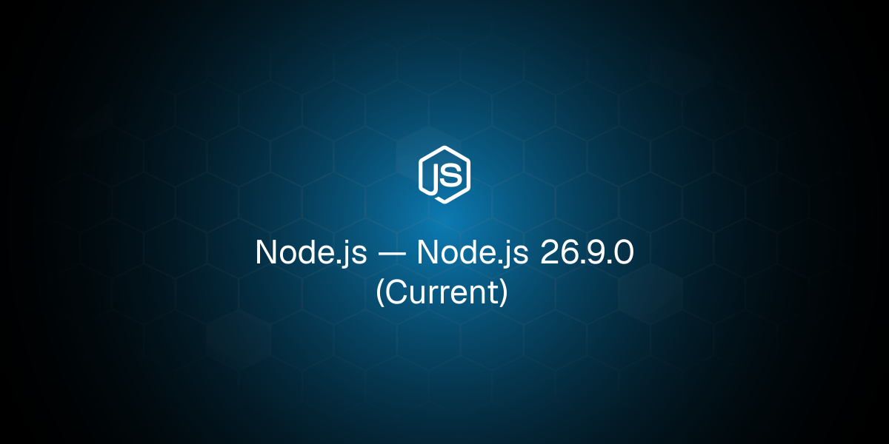
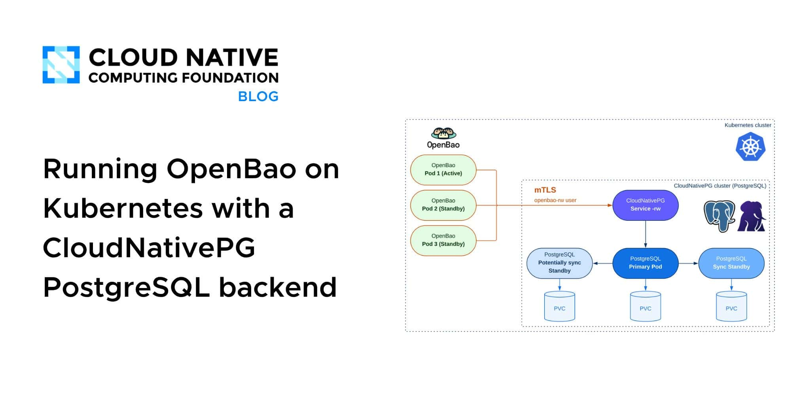
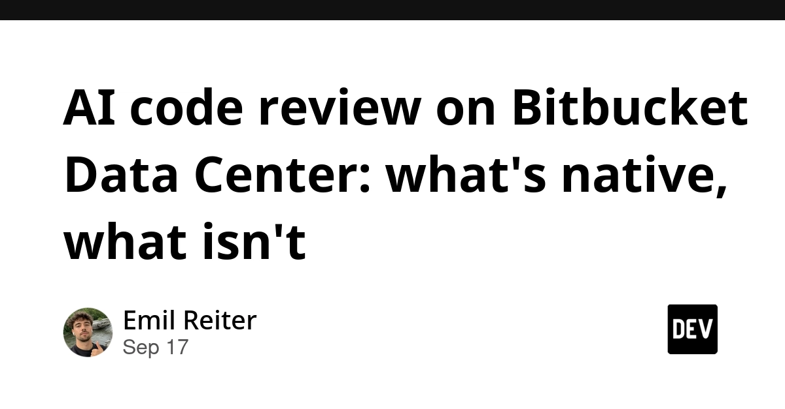
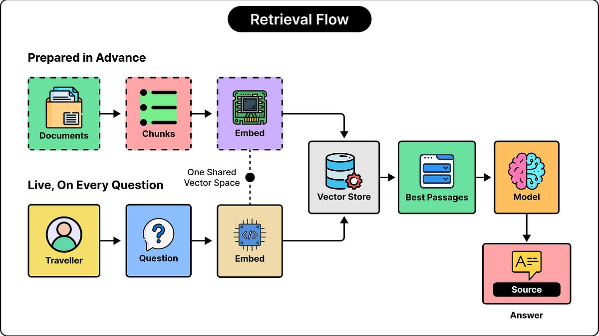
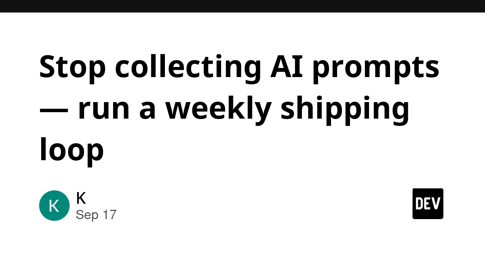
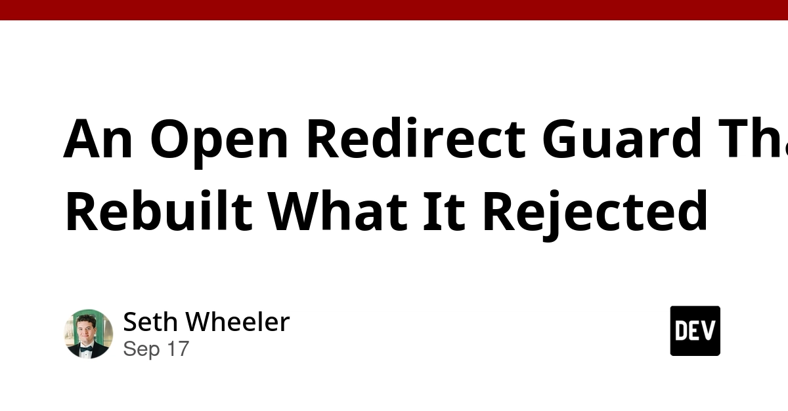
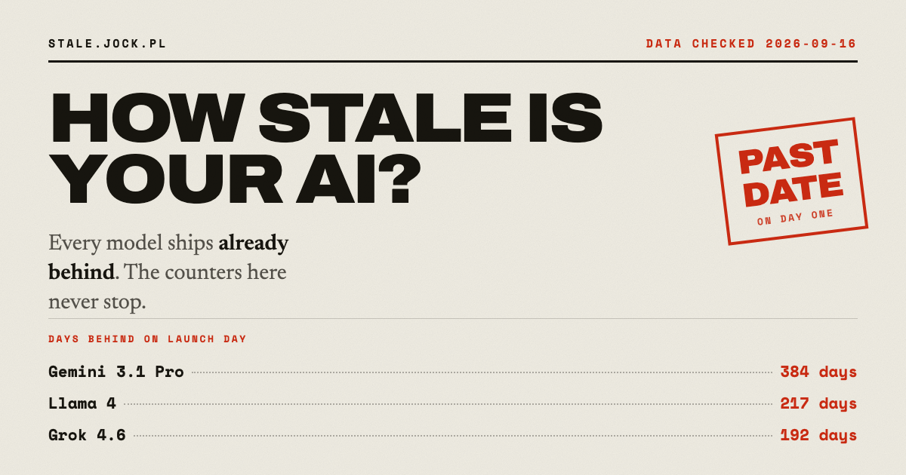

🔥 Top 3 (must read)
Migrating the GitHub Copilot runtime to Rust, using Copilot
GitHub ported the Copilot agent runtime to about 800,000 lines of production Rust, and used Copilot itself to do the work. The post says a rewrite this size was not affordable before coding agents, and it walks through what the port really took. Why it matters: this is a real, large-scale case study of a team using an agent for a big migration, with lessons you can copy for your own team's AI adoption.

Node.js 26.9.0 (Current)
A new release on the Node.js 26 Current line. Read the changelog for the changes before you bump your backend images. Why it matters: Node.js is your core backend runtime, and Current-line releases are where new APIs land first.

Kubernetes v1.37: Hardening Container Storage with Bind Mount Options and EmptyDir Permissions
Kubernetes 1.37 adds permission modes for
emptyDir volumes and bind mount options. You can now block file deletion across containers or stop binaries running from writable volumes, directly in the pod spec. Why it matters: these are simple, native ways to tighten container security without extra tooling or workarounds.K
🛠 Tools & releases
Node.js 26.9.0 (Current)
new Current-line release.
Kubernetes v1.37 storage hardening
emptyDir permission modes and bind mount options.K
AWS Lambda Managed Instances: What Min=0/Max=0 Actually Does in Production
hands-on setup of Lambda on EC2 capacity you control, including the failures and dead ends you will hit.
Running OpenBao on Kubernetes with a CloudNativePG PostgreSQL backend
self-healing secrets management with the open-source Vault fork, no vendor lock-in.

🤖 AI for developers
Migrating the GitHub Copilot runtime to Rust, using Copilot
agent-driven rewrite at 800k-line scale.
Claude Cowork and chat are now one Claude
Anthropic merges Cowork into the main Claude app. Tasks keep running after you close your laptop. Rolling out to Pro and above. Fewer product names to explain to your team.
S
AI code review on Bitbucket Data Center: what's native, what isn't
self-hosted Bitbucket has no native AI review. Rovo Dev is Cloud-only. Useful if your team is on-prem and asking for AI review.

How LLMs Can Find a Needle in a Haystack
ByteByteGo explainer on how long-context retrieval works inside an LLM.

👔 Engineering & teams
This Code Is CRAP (2011)
(HN discussion) — Google's classic post on the CRAP score. It combines code complexity with test coverage to find code that is risky to change. Still a good talking point for code review culture.
Stop collecting AI prompts — run a weekly shipping loop
a weekly review habit so AI-assisted coding turns into shipped work, not saved prompts. Includes a free template.

An Open Redirect Guard That Rebuilt What It Rejected
a maintainer audits their own npm package and finds a security bug
npm audit never saw. A good reminder that audit tools only catch known issues.
🎯 For me
Node.js 26.9.0 — direct hit on your backend stack. Bump and test.
Copilot runtime rewrite with Copilot — the best "how a team used an agent" story today. Good input for your team's AI adoption plan.
CRAP score — an easy metric to pair with your test strategy. Complexity times low coverage tells you where E2E and unit tests are missing most.
Kubernetes 1.37 storage hardening — small config changes with a real security win for your clusters.
💡 App ideas & indie builds
Show HN: How Stale Is Your AI? Release age and training cutoff for 20 models
(HN discussion) — a simple page that shows, for 20 models, how old the release is and where the training cutoff sits. User problem: developers pick a model and do not know how out of date its knowledge is. Why it inspires: one clear dataset, one clear view. A tiny site around a single question people keep asking. Same pattern works for "which Flutter version does X support" or "which Node.js API landed in which release".

🎓 Try this
Compute a CRAP score on one hot module in your codebase this week. Take the cyclomatic complexity of each function and multiply it by how little test coverage it has, as described in This Code Is CRAP. The functions at the top of the list are where your next Playwright or unit tests should go.